International Nurses Day Health Campaign
Clinical Practice & Community Health Engagement
As part of our clinical practice and professional development, we participated in a two-day health campaign organized by Grameen Caledonian College of Nursing under the Health Services division on the occasion of International Nurses Day.
The program was conducted at Yunus Centre and Grameen Telecom, where we provided basic health check-ups, health awareness support, wellness guidance, and patient communication services for employees and participants.
This experience helped strengthen practical nursing skills, teamwork, clinical communication, and real-world healthcare experience.
Health Check-up
Comprehensive vital signs assessment and health screening for participants
Vital Signs Monitoring
Accurate recording and monitoring of blood pressure, pulse, and temperature
Health Awareness Counseling
Providing health education and awareness support on wellness and disease prevention
Patient Communication & Support
Compassionate communication and guidance for participants and their families
Experience Gallery
Moments from the health campaign
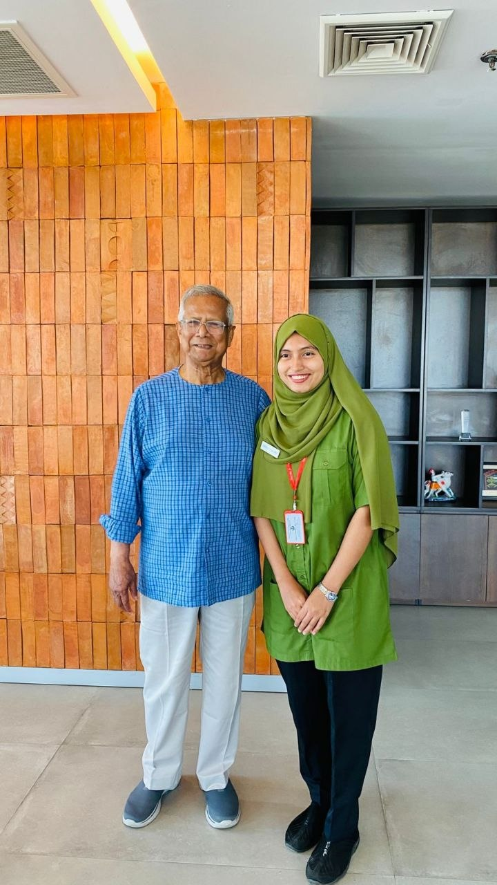
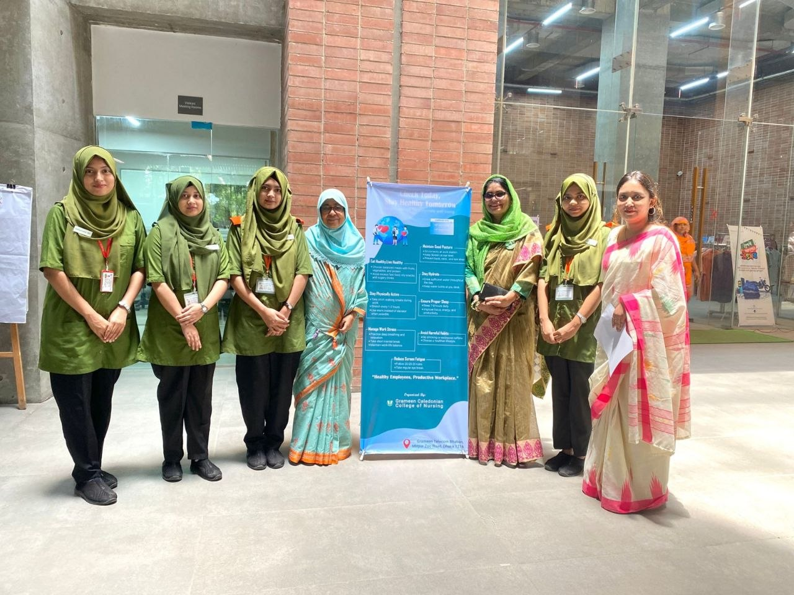
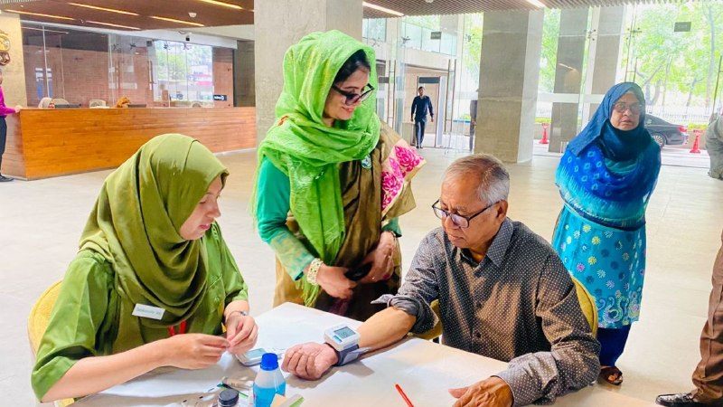
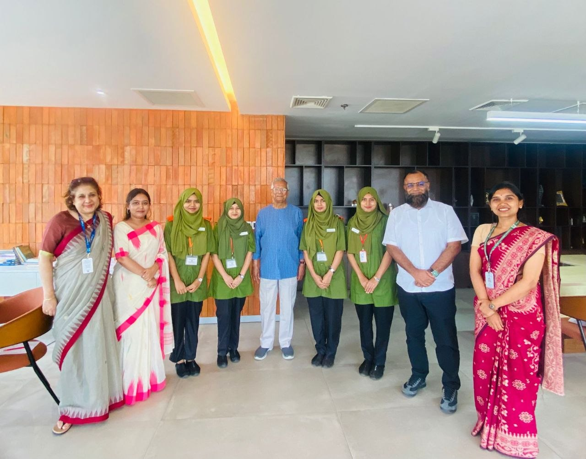
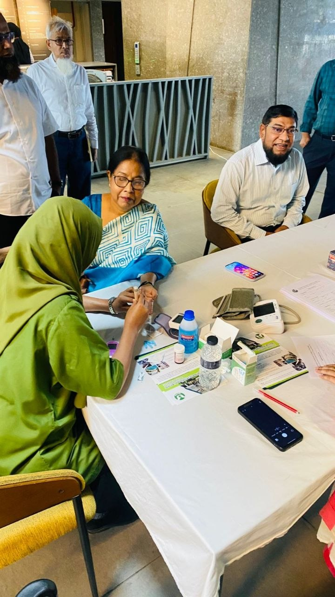
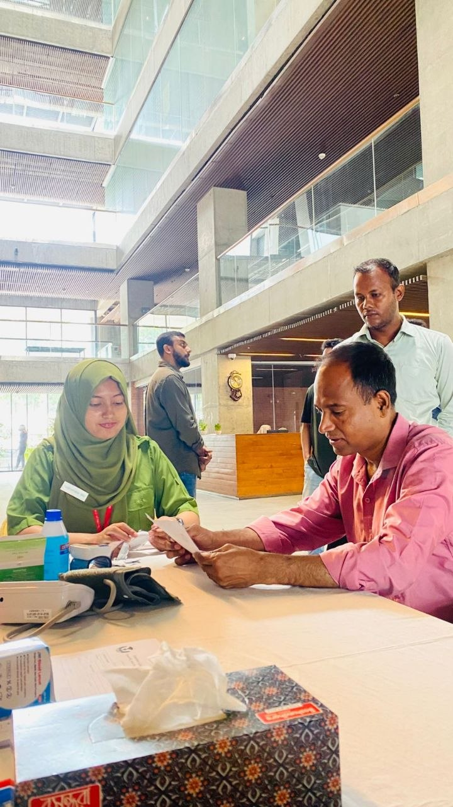
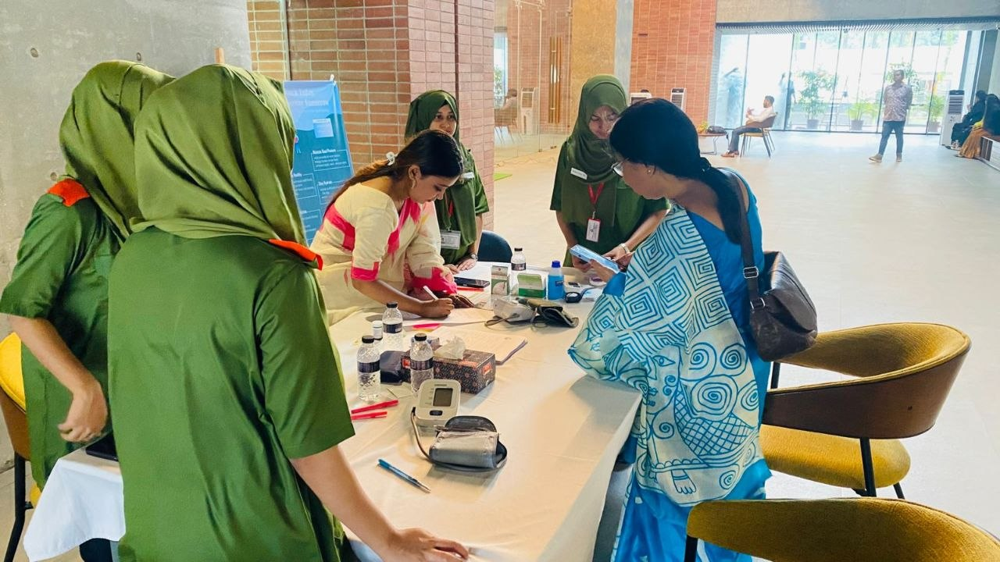

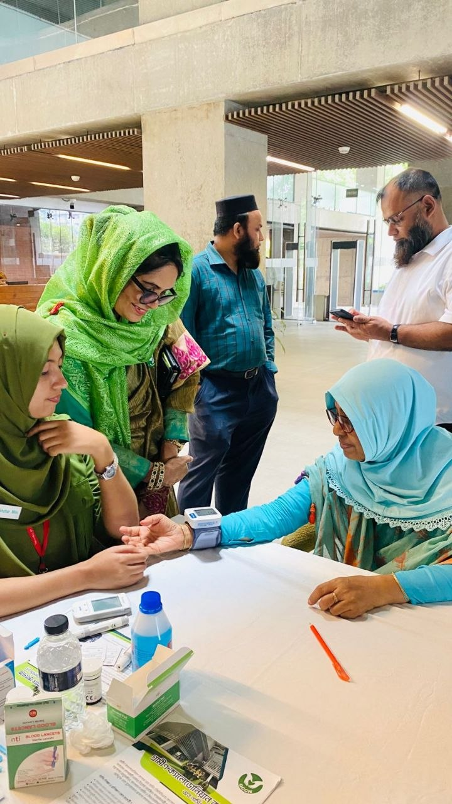
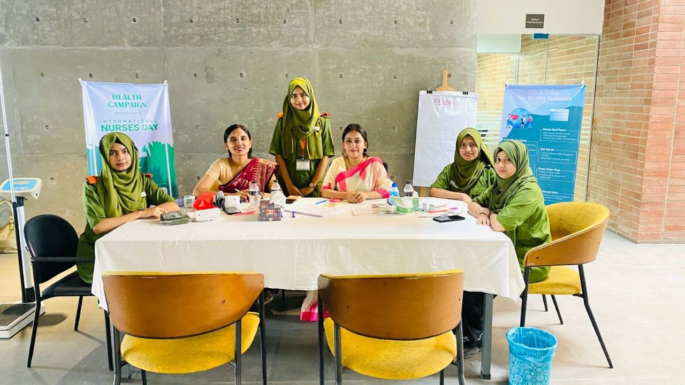
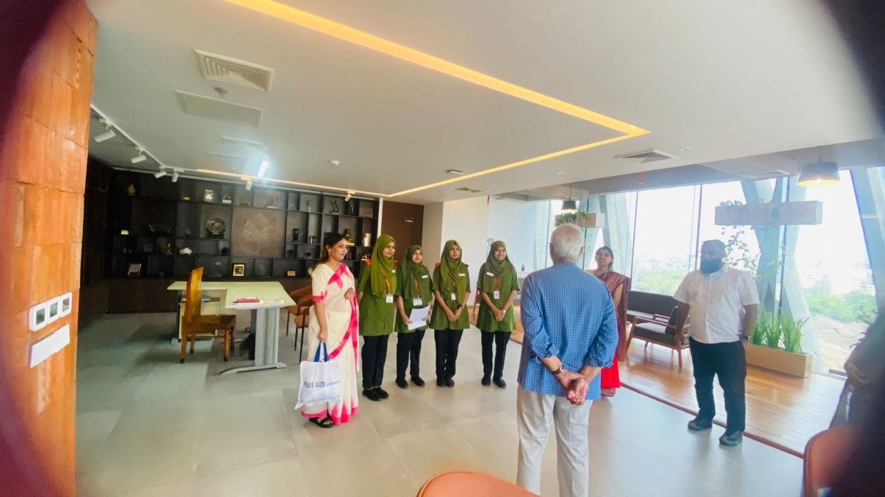
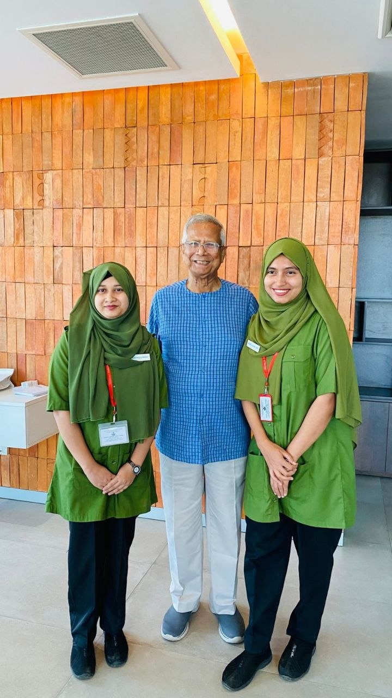
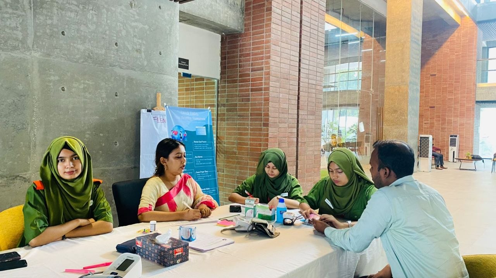
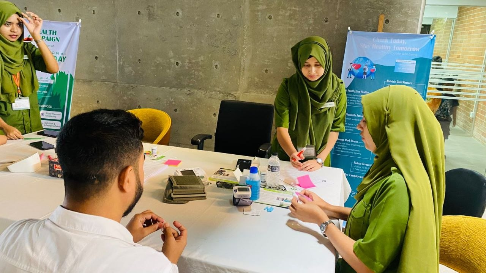